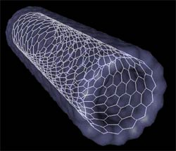

Future of Nanotechnology
The possible applications of nanotechnology seem endless, especially in healthcare, reducing our environmental impact and national security.
Scientists believe that in the future, nanotechnology may produce
- surgical instruments the size of molecules
- the creation of food from molecules, possibly ending famine
- polution free industrial manufacturing
- devices that clean up pollution
- nanobots that cure cancer, AIDS and bacteria/viruses
- personalized medicine, specific to a person's DNA
- smart houses that adapt to temperature and environment
- specialized military sensors and smart weapons
- military equipment that can repair itself

According to Mihail C. Roco, a senior advisor for nanotechnology at the National Science Foundation, there are four stages of nanotech development:
- Development of nanomaterials with a stable structure that are usually used as part of a product (began in 2000)
- Focused research on nanostructures that change size, shape or conductivity during its use (began in 2005)
- Development of systems of nanostructures that form self-dependent wholes that operate by themselves (projected to start around 2010)
- Development of molecular nanosystems that may lead to new types of genetic therapies and anti-aging treatments (projected around 2015-2020)